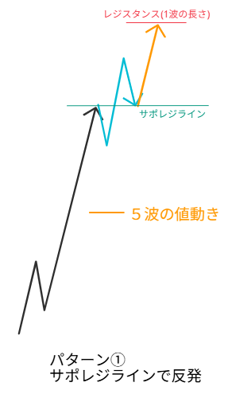
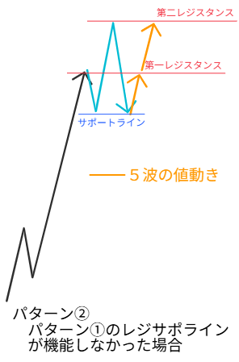
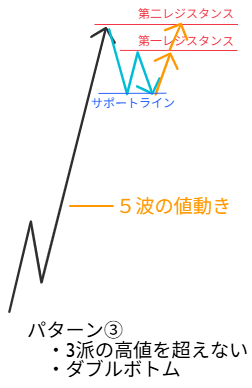
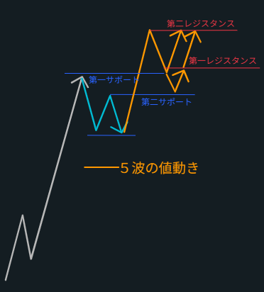
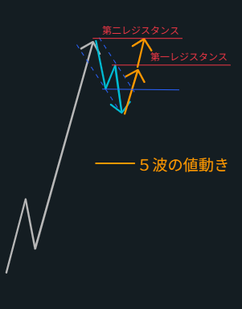

必ずテクニカルが入る — 5つの鉄板形を習得せよ
相場を動かしている正体（大衆の決済行動）を理解し、
その発動ポイントだけを狙う。
「やらない場所を先に決めるトレード」
分からない相場は丁寧に手放す。確定した形が出た瞬間だけ乗る。
多くの買いポジションが存在し、含み益が積み上がっている。利確圧力が潜在的にある状態。
新規の売りではなく、含み益を持つ人たちの利確。買いが消えた結果の下落。燃料切れの場所。
相場が来る前に「買う場所・様子見・絶対やらない」を全部決めておく。感情ではなく条件で動く。
波を当てにいかない。「5波に見える客観パターンになった瞬間だけ入る」という完全ルール化で動く。形で決め打つのがプロの思考。
通常は3波派・5波派が混在し入ると負けやすい。しかし鉄板パターンが出ると：
以下のステップを順番に確認してからエントリーする。これがフィルタリングの全て。
上昇トレンドが継続しているか？方向がズレていたら見送り
綺麗なNか？押し幅が1/3以内か？崩れていれば見送り
N完成後にストンと落ちたか？
50%到達 → 完全スルー / 浅い押し → 続行
形が揃うまで絶対に触らない。パターン①〜⑤のどれか確認
前日高値・安値のブレイクを確認。未ブレイクなら見送り。ストキャスでタイミングを計測し鉄板パターンを応用

サポレジラインで反発燃料：新規買い＋売りの損切り（最強パターン）
買いが優勢。みんな「上だな」と認識。ここは普通の状態。
押し目買い勢「まだ上がる」vs 逆張りショート勢「そろそろ落ちる」→ 対立が生まれる
「割れるか？」「支えられるか？」一番重要な局面。
売り勢「抜けた！下だ！」→ ショートエントリー
買い勢「一旦様子見…」→ 一時的に売りが優勢に見える
売り勢 → 含み損 → 損切りスタンバイ
買い勢 → 「やっぱり強い」→ エントリー
→ 買い注文＋売りの損切りが同時発動 → 爆発的な上昇（5波）

レジサポが機能しなかった場合燃料：旧勢力の損切り＋新勢力の追随
パターン②はトレンドの最後・利益確定ゾーン・転換が近い場所。伸びに限界がある。
| パターン | 特徴 | 伸び |
|---|---|---|
| ① | トレンド継続 | 伸びやすい |
| ② | 最終波（5波） | 伸びに限界あり |
| プレイヤー | 思考 | 行動 |
|---|---|---|
| 3波で勝った人 | まだ持っている or 利確し始める | 売り圧力↑ |
| 乗り遅れた人 | 「今からでも乗りたい！」 | 新規買い→燃料 |
| 初心者 | 「ブレイク！買いだ！」 | 高値掴み |
| プロ | 「ここが売り場」 | 静かに売り始める |
サポートが割れたら即終了。理由：3波の買い勢が利確 → 買いポジションが消える → 上昇エネルギーがなくなる → 「5波の条件が崩壊」

3波高値を超えない・ダブルボトム燃料：下落狙い売りの損切りのみ（弱い・ターゲット浅め）
| 判断 | パターン | 特徴 |
|---|---|---|
| 3波高値を超える | ① or ② | 伸びる |
| 3波高値を超えない | ③確定 | 弱い・すぐ失速 |
利確したい（でもまだ様子見）
「まだ上がるはず！」→ 新規買いを入れる（しかし弱い）
「あれ？弱くない？」→ 高値更新しないことで違和感が生まれる

パターン③の延長・2重サポート反発燃料：含み損勢の逃げ（決済）— 再現性が高い
| パターン | 本質 | 前提 |
|---|---|---|
| ③ | 5波終了を警戒 | 3波高値を超えない |
| ④ | まだ3波継続と見る | 前回高値をブレイクするかどうかの分岐点 |
ブレイクするまでは「5波継続の可能性」と「5波終了の可能性」が同時に存在している不確定ゾーン。だから「確定を待つ」のではなく、有利な場所だけ抜く構造。N・場所の基準を固定して淡々と取る。
ポジションは外から見えない。上に溜まっているか・下に溜まっているか事前には分からない。だから「反応した方に後出しで乗る」が正解。先読みする必要はない。

下落1波安値割れタイミング燃料：間違ったトレンド認識の損切り（瞬発力高）
＝ 市場の意見が割れている状態。「売りたい人」と「買いたい人」が真っ向勝負するゾーン。
| 通常のエリオット | パターン⑤ |
|---|---|
| 3波 ＞ 1波（3波が最も強い） | 1波 ≒ 3波（同じ長さ） |
まだ下落成立の可能性がある。
安値ブレイクを「否定」してから入る ＝「下落派が負けた瞬間」だけを狙う。
分かる相場を探すな。分からない相場を丁寧に手放せ。この意識だけで無駄なトレードが大幅に減る。
相場が来る前にシナリオを全部決めておく。来たら従うだけ。途中で解釈を変えることが負けにつながる。
良い形だから入る（✗）ではなく、場所が良いから入る（✓）。構造を理解してから動く。
方向が揃っていない時は見送る。エネルギーが衝突している状態では伸びない。
大衆が「流れが変わった」と認識するラインを超えているか確認する。
パターンが成立するまで絶対に触らない。形が揃う瞬間だけに乗る。
半分戻し後のエントリー・途中での解釈変更・感情的ナンピン